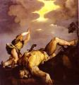

|
|
|
1 Samuel 17
|
|
| 17:1
Now the Philistines gathered together their armies to battle, and were
gathered together at Shochoh, which belongeth to Judah, and pitched between
Shochoh and Azekah, in Ephesdammim. |
Goliath Attempts to Limit Bloodshed
|
| 17:2
And Saul and the men of Israel were gathered together, and pitched by the
valley of Elah, and set the battle in array against the Philistines.
|
| 17:3
And the Philistines stood on a mountain on the one side, and Israel stood
on a mountain on the other side: and there was a valley between them. |
 (17:2) In the Valley of Elah (17:2) In the Valley of Elah
|
| 17:4
And there went out a champion out of the camp of the Philistines, named
Goliath, of Gath, whose height was six cubits and a span. |

 (17:4) (17:4)
"Goliath ... whose height was six cubits and a span."
Goliath was ten feet tall.
What the Bible says about giants.
|
| 17:5
And he had an helmet of brass upon his head, and he was armed with a coat
of mail; and the weight of the coat was five thousand shekels of brass.
|
| 17:6
And he had greaves of brass upon his legs, and a target of brass between
his shoulders. |
|
| 17:7
And the staff of his spear was like a weaver's beam; and his spear's head
weighed six hundred shekels of iron: and one bearing a shield went before
him. |
|
| 17:8
And he stood and cried unto the armies of Israel, and said unto them, Why
are ye come out to set your battle in array? am not I a Philistine, and ye
servants to Saul? choose you a man for you, and let him come down to me. |
|
| 17:9
If he be able to fight with me, and to kill me, then will we be your
servants: but if I prevail against him, and kill him, then shall ye be our
servants, and serve us. |
|
| 17:10
And the Philistine said, I defy the armies of Israel this day; give me a
man, that we may fight together. |
|
| 17:11
When Saul and all Israel heard those words of the Philistine, they were
dismayed, and greatly afraid. |
|
| 17:12
Now David was the son of that Ephrathite of Bethlehemjudah, whose name was
Jesse; and he had eight sons: and the man went among men for an old man in
the days of Saul. |
 (17:12) (17:12)
"David was the son of ... Jesse; and he had eight sons."
How man sons did Jesse have?
|
| 17:13
And the three eldest sons of Jesse went and followed Saul to the battle:
and the names of his three sons that went to the battle were Eliab the
firstborn, and next unto him Abinadab, and the third Shammah. |
|
| 17:14
And David was the youngest: and the three eldest followed Saul. |
|
| 17:15
But David went and returned from Saul to feed his father's sheep at
Bethlehem. |
|
| 17:16
And the Philistine drew near morning and evening, and presented himself
forty days. |
|
| 17:17
And Jesse said unto David his son, Take now for thy brethren an ephah of
this parched corn, and these ten loaves, and run to the camp of thy
brethren; |
|
| 17:18
And carry these ten cheeses unto the captain of their thousand, and look
how thy brethren fare, and take their pledge. |
|
| 17:19
Now Saul, and they, and all the men of Israel, were in the valley of Elah,
fighting with the Philistines. |
|
| 17:20
And David rose up early in the morning, and left the sheep with a keeper,
and took, and went, as Jesse had commanded him; and he came to the trench,
as the host was going forth to the fight, and shouted for the battle. |
|
| 17:21
For Israel and the Philistines had put the battle in array, army against
army. |
|
| 17:22
And David left his carriage in the hand of the keeper of the carriage, and
ran into the army, and came and saluted his brethren. |
|
| 17:23
And as he talked with them, behold, there came up the champion, the
Philistine of Gath, Goliath by name, out of the armies of the Philistines,
and spake according to the same words: and David heard them. |
|
| 17:24
And all the men of Israel, when they saw the man, fled from him, and were
sore afraid. |
|
| 17:25
And the men of Israel said, Have ye seen this man that is come up? surely
to defy Israel is he come up: and it shall be, that the man who killeth him,
the king will enrich him with great riches, and will give him his daughter,
and make his father's house free in Israel. |
|
| 17:26
And David spake to the men that stood by him, saying, What shall be done
to the man that killeth this Philistine, and taketh away the reproach from
Israel? for who is this uncircumcised Philistine, that he should defy the
armies of the living God? |
|
| 17:27
And the people answered him after this manner, saying, So shall it be done
to the man that killeth him. |
|
| 17:28
And Eliab his eldest brother heard when he spake unto the men; and Eliab's
anger was kindled against David, and he said, Why camest thou down hither?
and with whom hast thou left those few sheep in the wilderness? I know thy
pride, and the naughtiness of thine heart; for thou art come down that thou
mightest see the battle. |
|
| 17:29
And David said, What have I now done? Is there not a cause? |
|
| 17:30
And he turned from him toward another, and spake after the same manner:
and the people answered him again after the former manner. |
|
| 17:31
And when the words were heard which David spake, they rehearsed them
before Saul: and he sent for him. |
|
| 17:32
And David said to Saul, Let no man's heart fail because of him; thy
servant will go and fight with this Philistine. |
|
| 17:33
And Saul said to David, Thou art not able to go against this Philistine to
fight with him: for thou art but a youth, and he a man of war from his
youth. |
(17:33) "Thou art but a youth."
Was David a man of war?
|
| 17:34
And David said unto Saul, Thy servant kept his father's sheep, and there
came a lion, and a bear, and took a lamb out of the flock: |
(17:34-35)
"There
came a lion, and a bear ... I caught him by his beard, and smote him."
David caught a lion (and a bear?) "by his beard" and then killed him.
|
| 17:35
And I went out after him, and smote him, and delivered it out of his
mouth: and when he arose against me, I caught him by his beard, and smote
him, and slew him.
|
| 17:36
Thy servant slew both the lion and the bear: and this uncircumcised
Philistine shall be as one of them, seeing he hath defied the armies of the
living God. |
|
| 17:37
David said moreover, The LORD that delivered me out of the paw of the
lion, and out of the paw of the bear, he will deliver me out of the hand of
this Philistine. And Saul said unto David, Go, and the LORD be with thee. |
|
| 17:38
And Saul armed David with his armour, and he put an helmet of brass upon
his head; also he armed him with a coat of mail. |
David Decapitates Goliath
|
| 17:39
And David girded his sword upon his armour, and he assayed to go; for he
had not proved it. And David said unto Saul, I cannot go with these; for I
have not proved them. And David put them off him.
|
| 17:40
And he took his staff in his hand, and chose him five smooth stones out of
the brook, and put them in a shepherd's bag which he had, even in a scrip;
and his sling was in his hand: and he drew near to the Philistine. |
|
| 17:41
And the Philistine came on and drew near unto David; and the man that bare
the shield went before him. |
|
| 17:42
And when the Philistine looked about, and saw David, he disdained him: for
he was but a youth, and ruddy, and of a fair countenance. |
|
| 17:43
And the Philistine said unto David, Am I a dog, that thou comest to me
with staves? And the Philistine cursed David by his gods. |
|
| 17:44
And the Philistine said to David, Come to me, and I will give thy flesh
unto the fowls of the air, and to the beasts of the field. |
|
| 17:45
Then said David to the Philistine, Thou comest to me with a sword, and
with a spear, and with a shield: but I come to thee in the name of the LORD
of hosts, the God of the armies of Israel, whom thou hast defied. |
(17:49-51)
"David put his hand in his bag, and took thence a stone, and slang it, and smote the Philistine."
How did David kill Goliath?
With a sling ( verse 50) or
a sword (verse 51)? Or did he kill him twice?
(17:50)
"David ... slew him; but there was no sword in the hand of David."
Who killed Goliath?
 (17:51) "David ... slew him, and cut off his head."
(17:51) "David ... slew him, and cut off his head."
David kills Goliath with his sling, beheads him, and carries the head back to Jerusalem.
What the Bible says about decapitation
David and Goliath
(Titian, 1540s)
|
| 17:46
This day will the LORD deliver thee into mine hand; and I will smite thee,
and take thine head from thee; and I will give the carcases of the host of
the Philistines this day unto the fowls of the air, and to the wild beasts
of the earth; that all the earth may know that there is a God in Israel.
|
| 17:47
And all this assembly shall know that the LORD saveth not with sword and
spear: for the battle is the LORD's, and he will give you into our hands.
|
| 17:48
And it came to pass, when the Philistine arose, and came, and drew nigh to
meet David, that David hastened, and ran toward the army to meet the
Philistine.
|
| 17:49
And David put his hand
in his bag, and took thence a stone, and slang it, and smote the Philistine
in his forehead, that the stone sunk into his forehead; and he fell upon his
face to the earth.
|
| 17:50
So David prevailed
over the Philistine with a sling and with a stone, and smote the Philistine,
and slew him; but there was no sword in the hand of David.
|
| 17:51
Therefore David ran,
and stood upon the Philistine, and took his sword, and drew it out of
the sheath thereof, and slew him, and cut
off his head therewith. And when the Philistines saw their champion
was dead, they fled.
|
| 17:52
And the men of Israel and of Judah arose, and shouted, and pursued the
Philistines, until thou come to the valley, and to the gates of Ekron. And
the wounded of the Philistines fell down by the way to Shaaraim, even unto
Gath, and unto Ekron. |
Another Slaughter of the Philistines
|
| 17:53
And the children of Israel returned from chasing after the Philistines,
and they spoiled their tents.
|
| 17:54
And David took the
head of the Philistine, and brought it to Jerusalem; but he put his
armour in his tent. |
(17:55-58) "Whose son is this youth?"
In this passage Saul can't even recognize
David, yet according to 16:21-22 Saul knows
David very well indeed.
When did Saul meet David?
The Fate of Goliath's Head
|
| 17:55
And when Saul saw
David go forth against the Philistine, he said unto Abner, the captain
of the host, Abner, whose
son is this youth? And Abner said, As thy soul liveth, O king, I cannot
tell.
|
| 17:56
And the king said,
Enquire thou whose son the stripling is.
|
17:57
And as David returned from the slaughter of the Philistine, Abner took
him, and brought him before Saul with the head of the Philistine in his
hand.
| 17:58
And Saul said to him,
Whose son art thou, thou young man? And David answered, I am the son of
thy servant Jesse the Bethlehemite.
|
| |